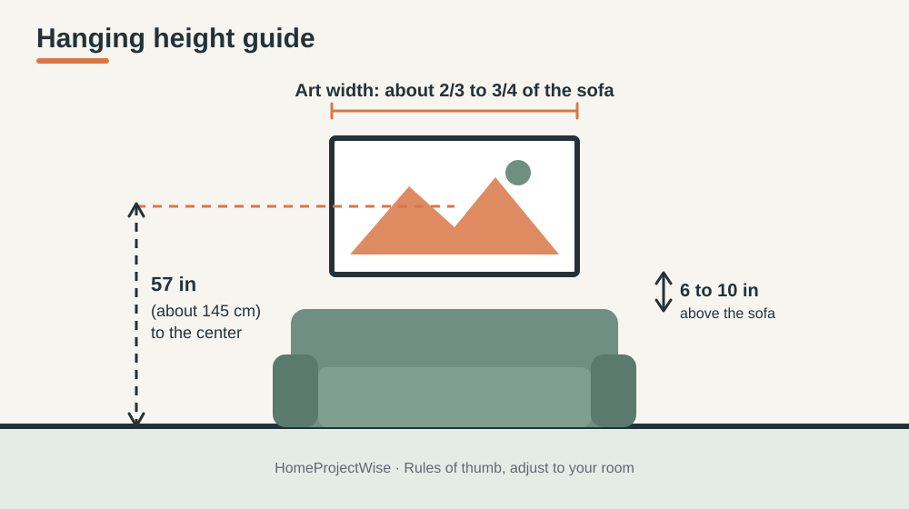

HOME PROJECTS · DECOR
How to Hang Large Wall Art Without Damaging Your Walls: A Beginner's Guide
Big art can transform a plain wall, but a heavy frame on the wrong hardware ends up on the floor, or worse, takes a chunk of drywall with it. Here is how to plan, measure and hang oversized wall art the safe way, even if you have never used a drill.
Disclosure: this article may contain affiliate links. If you buy through one, HomeProjectWise may earn a commission at no extra cost to you.
1. Plan before you drill
Most wall damage comes from guessing. Spend ten minutes on planning and you will drill once instead of five times.
- Weigh and measure the piece. Check the weight and the distance between the hanging points on the back.
- Make a paper template. Cut kraft paper or newspaper to the size of the art and tape it to the wall.
- Use painter's tape to mark the hanging points on the template, then step back and check it from across the room.
2. Pick the right height
Galleries usually place the center of a piece at about 57 inches (145 cm) from the floor, which is roughly eye level. Over a sofa, bed or console, a gap of about 6 to 10 inches between the furniture and the frame keeps the two visually connected. For big art, aim for a width of about two thirds to three quarters of the furniture below it.

3. Know what is behind your wall
- Drywall over wood studs: the most common wall in US homes. Studs are often 16 inches apart, center to center, and a stud finder will locate them.
- Plaster: brittle and can crack. Drill slowly, use a small pilot hole and consider a masking tape cross over the spot.
- Brick or concrete: needs a masonry bit and proper wall plugs.
- Rental walls: check your lease first. Small holes are often fine, but ask.
4. Choose hardware that matches the weight
The tiny hook in the box is often meant for light pieces. For large art, check the weight, then choose hardware rated well above it.
- Into a stud: a screw straight into the stud is the strongest option.
- No stud where you need it: use anchors rated for the weight, such as toggle bolts or screw-in drywall anchors, and follow the package instructions.
- Wide or heavy pieces: two hanging points, or a French cleat (two matching strips that lock together), spread the load and keep the piece level.
- Adhesive strips: only for light pieces within the printed weight limit, and not in humid rooms.
5. Hang it step by step
- Tape the paper template to the wall at your chosen height.
- Check it with a level, then mark the hanging points through the paper.
- Drill a pilot hole at each mark, insert anchors if needed, and drive the screws or hooks.
- Remove the template and hang the piece.
- Place a level on top and adjust. Small rubber bumpers on the lower corners keep it from shifting.
6. Humid rooms need extra care
Bathrooms and basements move a lot of moisture. Keep art out of direct shower spray, make sure the room is ventilated, and read the maker's care instructions for the material you are buying. If condensation is a problem, start with how to reduce bathroom condensation.
7. Where to find oversized art
Large art can be expensive, so compare size, material, return policy and what hardware is included. One option is BIG Wall Décor, which sells oversized prints. Its ArtFab line is a fabric print in a frame, and at the time of writing the ArtFab pieces we looked at were listed at roughly $160 to $165 in sizes such as 24 by 36 inches. Hanging hardware is listed as a separate item on its site. Check the current weight, size and care details on the product page before you order. This is not a product test.
Frequently Asked Questions
How high should I hang large wall art?
A common rule is to place the center of the artwork about 57 inches (145 cm) above the floor. Over a sofa or console, leave roughly 6 to 10 inches between the furniture and the bottom of the frame.
Can I hang heavy art on drywall without a stud?
Yes, if you use anchors rated well above the weight of the piece, such as toggle bolts or screw-in drywall anchors, and follow the instructions on the package. For very heavy or wide pieces, a stud or a cleat system is safer.
How many hooks or anchors do I need?
Wide pieces are steadier on two hanging points than on one. Check the weight and the hanging hardware recommended by the maker, and spread the load across studs or several anchors when you can.
Are adhesive strips safe for large art?
Only for light pieces, and only within the weight limit printed on the strips. For large or heavy art, use screws, anchors or a cleat. Adhesive strips can also fail in humid rooms.